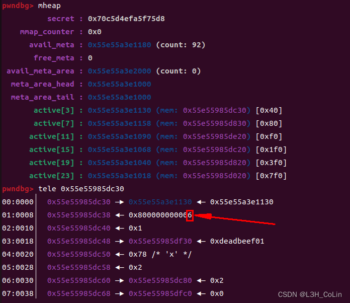
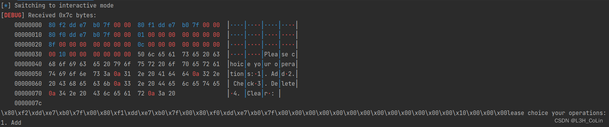
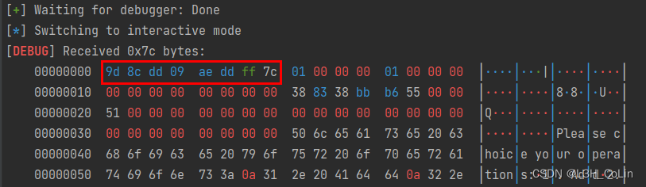

刚刚结束的2022年强网杯中有一道题用到了musl libc，但是之前没有接触过，只能遗憾跳过。本文根据musl libc 1.2.2的源码，和赛题本身，学习一下musl libc的利用方式。
musl libc 是一种轻量级的libc，可以用于嵌入式设备等，其中包含malloc、free等一系列函数的实现都与glibc相差甚远。但由于其轻量化的定位，其实现的代码量也相对较少，便于我们通过源码进行直接分析。
本文主要参考资料：资料
UserManager
本题的musl版本是1.2.2，在新版的Ubuntu 22.04中下载的musl默认版本为1.2.2-4。
1. 逆向分析程序
用IDA打开之后，发现其中的符号表大多还在，省去了重命名函数的时间。在Menu函数中，我们可以得知这个程序能够实现的功能有：Add、Check、Delete、Clear。下面依次进行分析。
主要数据结构
本题中涉及的数据结构是红黑树。结构体定义如下：
1 | 00000000 chunk_info struc ; (sizeof=0x38, mappedto_6) |
那么在初次逆向程序时，我们应该如何得知本题的数据结构是红黑树呢？其重点就在于字段color功能的判断。在insert函数、doing函数、delete函数中，只有当color表示红黑树中结点的颜色时才能将程序的逻辑解释清楚。这需要一定的直觉与经验，也对我们的逆向能力做出了一定的要求。
Add函数
1 | int __fastcall add() |
其中insert函数就是向红黑树中插入结点的函数。这个红黑树是按照Id字段进行排序的，Id大的结点位于左边。在insert函数中又调用了doing函数，这个函数主要是用于插入结点后的红黑树调整，其中sini函数的功能是树结点旋转——将参数结点与其父节点顺时针旋转（参数结点是其父节点的左子节点），dext函数的功能是树结点旋转——将参数结点与其父节点逆时针旋转（参数结点是其父节点的右子节点）。后面的delete函数包含了所有红黑树的删除操作，漏洞点不在那里，故不做分析。
Check函数
1 | int check() |
这里是检查某个用户是否存在，如果存在则会输出用户名。
Insert函数
本题的漏洞点在于insert函数。
1 | void __fastcall insert(chunk_info *victim, chunk_info *base) |
需要注意当两次插入的Id相等时，会将原红黑树中对应的结点替换并释放。但如果原红黑树中被替换的结点是根节点，那么表示根节点的users指针就并不会改变。并且，根节点的释放是在分配新结点之后，因此我们通过分配新的结点就很有可能分配到根节点的结构体本身，这样也就能够对根节点的所有字段进行任意修改了。
2. 漏洞分析与利用
Step 1: 获取elf加载基地址
首先，我们需要知道应该如何才能分配到根节点chunk，这就涉及musl libc中的堆结构管理了。在musl libc中，相同大小的chunk被归为一个group中进行管理，一个group中只能存放有限个数的chunk，一个group有一个对应的meta进行管理。与glibc不同的是，musl中被释放的chunk在下一次相同申请大小的malloc时不一定会被分配，只有当group中找不到空闲的chunk时才会使用已经被释放的chunk。因此这需要我们对group进行填充。
本题中我们首先需要利用UAF漏洞获取到musl libc的基地址，但几乎所有的chunk都位于堆中，我们无法直接获取到libc中的地址。因此，我们需要首先泄露程序本身的加载地址。通过调试发现，存放meta等结构的内存空间紧邻程序内存，且在其上方的位置，所以我们可以首先通过泄露堆地址获取到程序加载地址：
在每一次add时，程序都会calloc一个大小为0x38的chunk，实际的分配大小为0x40。经过调试（调试方法参见资料）发现，管理chunk大小为0x40的group的容量为7，即最多只能容纳7个chunk。因此我们可以考虑首先分配掉5个chunk，然后分配根节点，并使其保存name的chunk也分配到这个group中，通过add相同Id的user让其释放，此时只有原根节点的name这个chunk被释放了，因为相同Id的结构体占用了原根节点的结构体空间，当我们再一次add时，这个chunk就会被用作user结构体，我们通过check就能够读取到其中的一些指针值。

1 | for i in range(5): |
由此，我们就成功获取了堆空间地址，进而得到了程序加载的基地址。
Step 2: 获取libc加载基地址
下一步，我们就需要想办法读取到程序中保存的stdout的值，以获取libc的基地址。由于在正常情况下堆地址不会分配到那个地方，因此我们需要能够修改根节点的结构体本身。可行的方法是：分配掉5个chunk，之后分配根节点，根节点的name大小也为0x38。然后我们重新分配根节点，释放前面的一个结点。此时7个chunk中一共就有3个被释放，依次是前面的一个chunk、原根节点结构体chunk、原根节点name的chunk。当我们此时再一次分配一个chunk，且将name的大小也设置为0x38时，我们就能够将name的chunk申请到原根节点结构体，从而直接修改原根节点结构体中name指针的值。不过需要注意的是，本题中添加和删除的操作较为复杂，随意修改三个二叉树指针很可能会导致程序崩溃退出，但经过调试发现，指针的值相对于elf文件加载地址的偏移始终不变。我们在上一步已经知道了elf的加载地址，因此我们在写的时候可以不修改指针的值，而是只修改name指针的值，避免程序崩溃。
1 | clear() |

成功获取stdout的值。
Step 3: 获取__malloc_context结构体中的secret值
和第二步相同，我们如法炮制。
1 | clear() |

成功获取secret值。
Step 4: 申请大空间，伪造meta_area, meta, group, chunk
现在，我们已经掌握了伪造chunk并释放所需的所有数据了，因此可以开始伪造相关结构了。对于musl libc pwn来说，从meta_area这个外层结构一直伪造到chunk这个最内层结构是较为常见的操作。我们通过伪造这些结构调用到dequeue这个函数实现类似于glibc中unlink的利用。在本题中，我们可以通过分配一个大于0x1000的chunk来完成伪造（因为所有meta_area必须页对齐）。经过调试发现，当我们分配一个大chunk时，musl libc会为我们开辟一块新的空间专门用于存放，这个空间是一个 group。因此实际上开始写的地址后12比特应该为0x030。我们跳过本页，在下一页进行伪造。
经过调试发现，用于保存大chunk的group分配到的mmap空间就在libc加载地址的正下方，大小为0x5000。因此我们可以获取到这块空间的地址，并在假的meta结构中写入假的group地址。
1 | struct _IO_FILE { |
这是musl libc中的_IO_FILE结构体，一般的利用方式是伪造一个假的_IO_FILE结构体，将read、write、close、seek函数指针覆写。注意，musl libc中没有one_gadget，因此我们只能将函数指针改写为system函数的地址，将_IO_FILE开头改写为字符串/bin/sh。
这一部分看起来容易，实际上不简单，需要我们经过反复调试才能成功unlink假的meta。
本题的exp中还有很多的细节值得注意，就比如fake meta中应该将fake FILE的地址放在prev指针还是next指针？注意dequeue的代码：
1 | m->prev->next = m->next; |
其中m->prev的地址就是m的地址，m->next的地址为m+8。在close_file函数中调用函数的语句中第1个参数是FILE结构体地址，因此我们需要将/bin/sh字符串写到FILE结构体的开始位置，如果将__stdout_used地址放在fake meta的prev指针位置，那么执行了m->next->prev = m->prev;之后，我们的fake FILE结构体的开头8字节就被修改了，覆盖了/bin/sh字符串。因此应该将__stdout_used写到next指针的位置。
exp：
1 | from pwn import * |